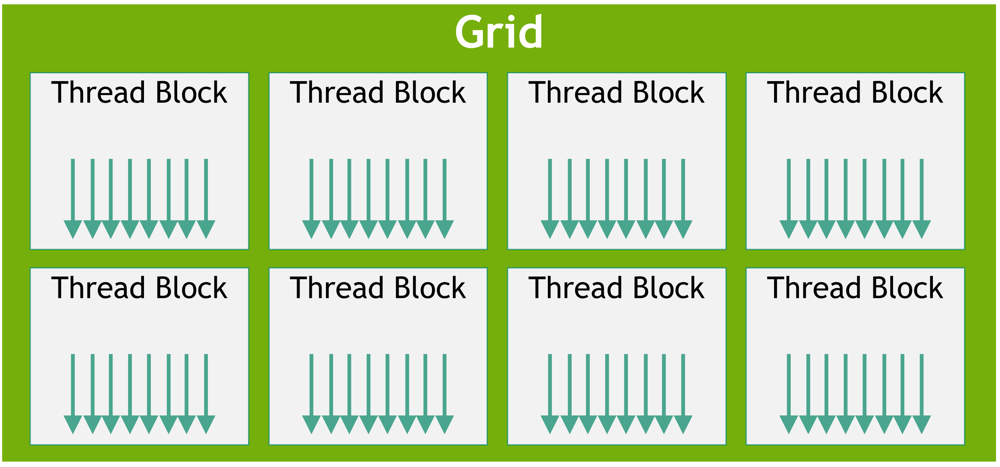
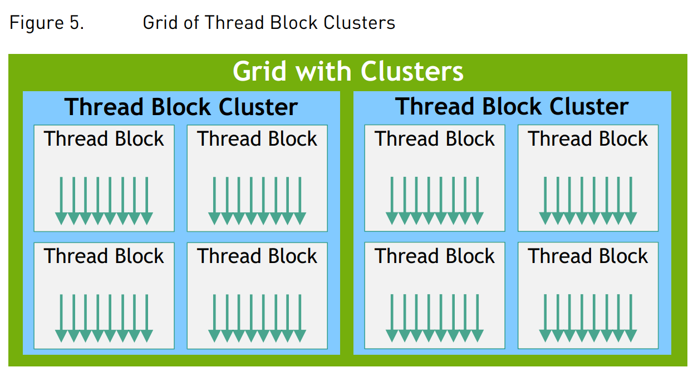

《CUDA C Programing Guide》读书笔记2——编程模型
《CUDA C Programing Guide》读书笔记1——整体介绍
本章介绍CUDA编程模型背后的主要概念，主要阐述这些概念是怎么在C++中的表现的。关于CUDA C++的扩展描述在下一章。
本章使用vectorAdd作为示例，详细代码在cudaSample中。
2.1 核函数 (Kernels)
CUDA C++扩展了C++，允许程序员定义C++函数作为kernel。当kernel被调用时，由N个不同的CUDA线程并行执行N次，而不是像普通C++函数那样只执行一次。
kernel 是用__global__修饰符定义的，执行这个kernel的CUDA线程数量是通过<<<...>>>来配置的，kernel中每个线程都有唯一的线程ID，可以通过内置变量访问。
以下示例代码使用内置变量threadIdx，把size为N的两个向量A和B相加，并将结果保存到向量C中：
1 | // Kernel definition |
这段代码中，执行VecAdd()的N个线程中的每个线程都进行了对应的加法运算。
2.2 线程层次结构（Thread Hierarchy）
便于理解起见，threadIdx被看做一个三维向量。可以使用一维、二维或三维的 线程索引(thread index) 来表示一维、二维或三维的 线程块(thread block) 。这提供了一种自然的方式来调用一个域中的元素的计算，如向量计算(1D)、矩阵计算(2D)或体积计算(3D)。
一个线程的索引和它的线程ID以一种直接的方式相互关联。对于一维块，它们是相同的；对于尺寸为$(D_x, D_y)$的二维块，索引为(x, y)的线程ID是$(x + y * D_x)$；对于尺寸为$(D_x, D_y, D_z)$的三维块，索引为(x, y, z)的线程的ID是$(x + y * D_x + z * D_x * D_y)$ 。
以下代码展示了将两个大小为NxN的矩阵A和B相加，并将结果保存到矩阵C中的示例：
1 | // Kernel definition |
每个线程块的线程数是有限制的。因为一个块的所有线程都应该驻留在同一个SM Core（streaming multiprocessor core）上，并且必须共享该核的有限内存资源。在现有的GPU上，一个线程块最多可包含1024个线程。
一个kernel可以由多个形状相同的线程块来执行，因此，总的线程数等于每个块的线程数乘以块数。
线程块(block)被组织成一维、二维或者三维的网格(grid)，如图4所示。网格中的线程块的数量通常是由被处理的数据大小(通常超过了系统中的处理器数量)决定的。

每个block的线程数和每个grid的block数量在 <<<…>>语法可以是int或dim3类型。
grid中的每个block可以通过一个一维、二维或三维的唯一索引来识别。在kernel中可以通过内置的blockIdx变量访问。block的尺寸可以在kernel中通过内置的 blockDim变量访问。
将之前的Matadd()示例扩展为处理多个block的，代码如下：
1 | // Kernel definition |
16x16的线程块大小（256个线程）是一种常见的选择（尽管在当前示例中是任意的）。Grid要包含足够数量的block，以便像之前示例一样让矩阵中的每个元素都有一个thread来处理，为简单起见，此示例假设每个维度中每个grid的线程数可以被该维度中每个block的线程数平均整除，尽管一般情况不一定如此。
线程块需要独立执行 ，必须能够以任何顺序(并行或串行)执行它们。这种独立性允许线程块以任意顺序被调度到任意数量的物理core上。因此程序员能够编写随核数量扩展的代码。
block内的线程可以通过共享内存来共享数据，并通过同步来协调内存访问，从而实现block内的线程协作。更准确地说，可以通过在kernel中调用__syncthreads()来指定同步点。__syncthreads()作为一个屏障（barrier)，block内的所有线程必须在这个屏障等待，然后才允许任何线程继续进行。3.2.4节给出了一个使用共享内存的例子。除了__syncthreads()外，扩展章节“Cooperative Groups API”提供了一套丰富的线程同步的原语。
为了高效协作，共享内存应该是靠近处理器核的低延迟内存（很像L1 cache），并且__syncthreads()应该是轻量级的。
2.2.1 Thread Block Clusters
随着NVIDIA Compute Capability 9.0的推出，CUDA编程模型引入了一个可选的层次结构级别，即线程块集群。线程块集群由线程块组成。和block内线程必须被调度在同一个SM上相似，cluster内的block也必须被调度在同一个GPU Processing Cluster (GPC)上。
需要学习一下GPC的硬件组织
和block相似，cluster也可以组织成一维、二维或者三维的形式，如图5所示。一个cluster内的block数量可以由用户定义，用户定义的这个值不超过8，这是CUDA支持的最大portable的size。超过8的是特定的架构，可以使用cudaOccupancyMaxPotentialClusterSize API进行查询。

在使用cluster特性启动的kernel中，
grid size仍然表示grid中block的数量，为了兼容性。The rank of a block in a cluster可以用Cluster GroupAPI来查找。
在kernel中启用cluster特性有两种方式：使用__cluster_dims__(X,Y,Z)修饰kernel，或者使用CUDA的kernel启动APIcudaLaunchKernelEx。
以下例子展示如何使用编译期修饰符启动一个支持cluster特性的kernel。使用这种方式启动的kernel, cluster size将在编译期固定，其他和普通使用<<<>>>启动的kernel没有区别。